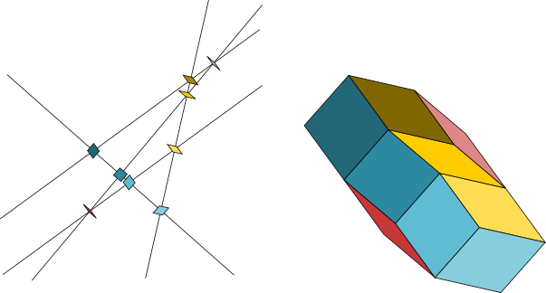

Jump to Explore Multigrid Tilings.
The Penrose tiling is the classic aperiodic tiling of the plane. In its simplest form, it consists of two tile shapes - a thick rhombus with angles of 72 and 108 degrees and a thin rhombus with 36 and 144 degree angles. Both rhombs have the same length sides. Penrose marked the rhombs so that they only fit together in certain orientations, but there are are also complex non-local requirements which make fitting together a large number of tiles a rather hit-or-miss affair. However, de Bruijn discovered a very clever deterministic way to fit together an arbitrarily large number of tiles without ever making any mistakes. Here, we will explore generalizations of de Bruijn's pentagrid idea, leading to an algorithm to draw Penrose and other similar tilings.
De Bruijn noticed that any set of intersecting lines in the plane defines a dual tiling as follows: Imagine an infinitessimal rhombus with its centroid at each intersection point and its edges perpendicular to the lines. If you inflate all of these to have a common side length, then you can use the sequence of intersection points along any one line to tell you the order to fit the corresponding rhomb edges together to completely cover a connected convex region of the plane. (If more than two lines intersect at a point, you can use the equilateral polygon whose edges are perpendicular to the lines as a single tile corresponding to that point - or you can decompose that even-sided convex polygon into rhombs by infinitessimally displacing the lines.)
(See adamponting.com/de-bruijn-tilings for nicer examples.)
To recap: Any set of intersecting lines determines a dual rhomb tiling. Each rhomb corresponds to one intersection point, and each vertex in the tiling corresponds to a polygonal region bounded by the lines. All the rhomb tile edges have equal lengths and the edges of each rhomb are perpendicular to the two lines of its corresponding intersection point. Walking from point to point around a polygonal region in the plane of the lines corresponds to walking from rhomb to rhomb around a vertex in the tiling. And walking around the four regions surrounding each intersection point corresponds to walking around the four corners of one rhomb in the tiling.
Now de Bruijn looked specifically at five infinite grids of equally spaced parallel lines, with each set of grid lines parallel to one edge of a regular pentagon, and discovered that not only did the dual rhomb tilings satisfy the Penrose matching conditions, but also that every infinite Penrose tiling was dual to such a “pentagrid”. Here we consider $n$ sets of parallel grid lines, first with arbitrary directions and line spacings, then with equal angles between the grids and equal line spacings more analogous to pentagrids.
Before we move on to infinite sets of parallel grid lines, consider a collection of $n$ random lines $\ZETAH_j\cdot\VEC{x}+\gamma_j=0.$ Generally we have $n(n-1)/2$ intersection points - one intersection for each pair of lines. An algorithm to draw the dual rhomb tiling is fairly simple:
The more structured infinite grids we consider next eliminate the need for the sorting. However, the sort operations do not make these finite tilings particularly more expensive to draw than the grids we turn to now.
Consider an arbitrary set of non-zero, non-parallel two dimensional vectors $\{\ZETA_j\}$ for $j = 1, 2, ..., n,$ and $n$ grids of equally spaced parallel lines \[ \ZETA_j\cdot\VEC{x} + \gamma_j = k_j, \] where $k_j$ runs through all integer values and $\gamma_j$ is an arbitrary constant determining the phase of the grid lines relative to the origin. Note that changing $\gamma_j$ by any integer value merely relabels the $k_j$ for all of the grid lines without changing the grid itself. Any pair $r, s$ of grids generates a regular lattice of intersection points $\VEC{x}(k_r, k_s)$ labeled by the line indices $(k_r, k_s).$
Although each $(r, s)$ pair produces a regular set of lattice points, when the $\ZETA_j$ are incommensurate the lattices corresponding to different pairs never synchronize, so the full pattern of $n(n-1)/2$ lattices is aperiodic. Nevertheless, we can construct the dual tiling explicitly.
Every point $\VEC{x}$ in the multigrid plane falls between one pair of $j$-lines, $k_j=K_j(\VEC{x})-1$ and $k_j=K_j(\VEC{x})$, which we can write using ceiling brackets: \[ K_j(\VEC{x}) = \lceil \ZETA_j\cdot\VEC{x} + \gamma_j \rceil. \] We also define the fractional distance from the point $\VEC{x}$ to the line $K_j(\VEC{x})$, $0 <= \lambda_j < 1,$ where \[ \lambda_j(\VEC{x}) = K_j(\VEC{x}) - \ZETA_j\cdot\VEC{x} - \gamma_j. \]
Next, define the function \[ f(\VEC{x}) = \sum_j K_j(\VEC{x})\ZETAH_j, \] where $\ZETAH_j$ is the unit vector in the direction of $\ZETA_j.$ The function $f$, like the $n$ functions $K_j$, is constant within every polygonal region of the multigrid. Therefore, the value of $f$ in each region corresponds to a vertex in the dual tiling. For vertex $(k_r, k_s)$ in the $rs$ lattice, call the value of $f$ \[ \VEC{z}(k_r, k_s) = \sum_j K_j(\VEC{x}(k_r,k_s))\ZETAH_j. \] Furthermore, as you walk around the intersection point $\VEC{x}(k_r,k_s),$ $f(\VEC{x})$ successively takes the four values \[ \VEC{z}(k_r, k_s),\quad \VEC{z}(k_r+1, k_s),\quad \VEC{z}(k_r+1, k_s+1),\quad \VEC{z}(k_r, k_s+1). \] Since crossing an $r$ (or $s$) line in the multigrid changes just $K_r$ (or $K_s$) by $\pm 1,$ these four values of $f$ are in fact the four corners of a unit-sided rhombus: \[ \VEC{z}(k_r, k_s),\quad \VEC{z}(k_r, k_s)+\ZETAH_r,\quad \VEC{z}(k_r, k_s)+\ZETAH_r+\ZETAH_s,\quad \VEC{z}(k_r, k_s)+\ZETAH_s \] Therefore, not only do the values of $f(\VEC{x})$ correspond to the vertices in a rhomb tiling, we can identify them as the vertices in a rhomb tiling dual to the multigrid! All the rhomb sides in this tiling have unit length, and the number of different rhomb shapes corresponds to the number of different angles between $\ZETAH_r$ and $\ZETAH_s$ for all $rs$ pairs.
Furthermore, we have discovered an algorithm to actually draw the dual tiling given the multigrid: Loop over all $n(n-1)/2$ of the $rs$ pairs, and draw the rhombs for each $(k_r, k_s)$ pair where that intersection point lies in some bounded region of the multigrid space.
Now rewrite the formula for $\VEC{z}(k_r, k_s)$ (the corner of the rhomb associated with intersection point $k_r, k_s$ that has the smallest values of $k_r$ and $k_s$) in terms of the remainders $\lambda_j(k_r, k_s) = \lambda_j(\VEC{x}(k_r, k_s))$. By definition $K_j(\VEC{x}(k_r, k_s)) = \ZETA_j\cdot\VEC{x}(k_r,k_s) + \gamma_j + \lambda_j(k_r,k_s),$ so \[ \VEC{z}(k_r, k_s) = \VEC{M}\cdot\VEC{x}(k_r,k_s) + \ETA + \sum_j\lambda_j(k_r,k_s)\ZETAH_j \] where we have defined the symmetric $2\times 2$ matrix $\VEC{M}$ as the sum of outer products \[ \VEC{M} = \sum_j\ZETA_j\,\ZETAH_j, \] and the vector $\ETA$ as \[ \ETA = \sum_j\gamma_j\,\ZETAH_j. \]
That is, the point $\VEC{z}$ in the tiling plane is always close to the point $\VEC{M}\cdot\VEC{x}(k_r,k_s) + \ETA + \sum_j\ZETAH_j/2$, where we have added the final term as the mean of the possible range of values of the $\lambda_j$ sum. Since we are primarily interested in the rhomb tiling, we can consider the sets of grid lines with the linear transform $\VEC{M}$ applied. This transformed multigrid will still have the same topology of intersection points as the original grid. However, instead of a rhomb associated with each intersection point, in general the transform $\VEC{M}$ will distort it into a parallelogram. In terms of $\VEC{x}'=\VEC{M}\cdot\VEC{x}$ the equations for the grid lines are \[ \PSI_j\cdot\VEC{x}' + \gamma_j = k_j \] where $\PSI_j = \VEC{M}^{-1}\cdot\ZETA_j.$ We also translate the definition of $\VEC{z}(k_r,k_s)$ to make it line up with $\VEC{x}'$ \[ \VEC{z}(k_r, k_s) = \sum_j K_j(\VEC{x}(k_r,k_s))\ZETAH_j - \ETA - \tfrac{1}{2}\sum_j\ZETAH_j, \] so that \[ \VEC{z}(k_r, k_s) = \VEC{x}'(k_r,k_s) + \sum_j(\lambda_j(k_r,k_s)-\tfrac{1}{2})\ZETAH_j. \]
Since the $\lambda_j$ are always between 0 and 1, we see that the center of the $(k_r,k_s)$ rhomb is always near its dual point $\VEC{x}'(k_r,k_s).$ Furthermore, $\lambda_r(k_r,k_s) =\lambda_s(k_r,k_s)=0,$ so there are only $n-2$ non-zero terms in the displacement $\sum_j\lambda_j(k_r,k_s)\ZETAH_j.$
Note that the grid intersection points can be written explicitly as \[ \VEC{x}'(k_r, k_s) = (k_s - \gamma_s)\PHI_{rs} + (k_r - \gamma_r)\PHI_{sr} \] where $\PHI_{rs} = \PSI_{r\perp} / \PSI_r \times \PSI_s,$ and $\PSI_{r\perp}$ is $\PSI_r$ rotated ninety degrees counterclockwise so that $\PSI_{r\perp} \cdot \PSI_s = \PSI_r \times \PSI_s.$ Beware that a set of $k_j$ values uniquely identifies only a zone in the multigrid (or a vertex in the tiling) - not an intersection point in the multigrid. A set of $k_j$ values may be shared by different intersection points in separate $(r, s)$ lattices, or by the corresponding different rhombs in the tiling.
When the angles are equally spaced - at $n$-th roots of unity when $n$ is odd, or $2n$-th roots of unity when $n$ is even - and all $n$ grid spacings are equal, the only real simplification in this picture is that the matrix $\VEC{M}$ is proportional to the identity matrix. In fact, $\VEC{M}=\tfrac{n}{2}\VEC{I}$ so that $\PSI_j=\tfrac{2}{n}\ZETAH_j.$ (We assume $\ZETA_j=\ZETAH_j$ here.) This means that $\VEC{x}'=\tfrac{n}{2}\VEC{x}$ is an undistorted version of the original multigrid.
For the case of odd $n$, something else interesting happens. In this case, $\sum_j\ZETA_j=0.$ If we additionally restrict the $\gamma_j$ to have the property $\sum_j\gamma_j=0,$ then since $K_j(\VEC{x})$ is an integer, \[ \begin{eqnarray*} \sum_j K_j(\VEC{x}) &=& \sum_j(\ZETA_j\cdot\VEC{x} + \gamma_j) + \sum_j\lambda_j(\VEC{x}) \\ &=& \sum_j\lambda_j(\VEC{x}) \\ &=& I(\VEC{x}) \end{eqnarray*} \] is also an integer for every point $\VEC{x}$ in the multigrid plane. Since $0\le\lambda_j\lt 1,$ we have $I(\VEC{x})\lt n.$ Furthermore, assuming all $n$ lines never meet at any point, $I(\VEC{x})\gt 0.$ The function $I(\VEC{x})$ is called the index of a point.
For the $n=5$ case de Bruijn first studied, this $\sum_j\gamma_j=0$ restriction (equivalent to summing to any integer value, since shifting the $k_j$ line labels does not change the grid) plays an important role in his proof that the pentagrid construction is identical to Penrose's original edge matching construction. This proof is based on the integer values of the index, which he can use to label the vertices in the tiling. Those vertex labels can be used to reconstruct the edge matching conditions. If $\sum_j\gamma_j$ has some non-zero, non-integer value, it is unclear what happens - the tilings derived from such a pentagrid still look like Penrose tilings, but perhaps the edge matching conditions can occasionally fail.
What is the analogous vertex labeling function for even $n$?
You can drag the following tilings with the mouse or your finger, and you can zoom in or out with the mouse wheel or pinch gestures.